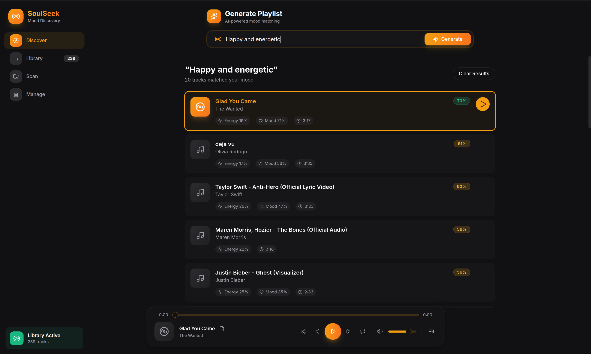
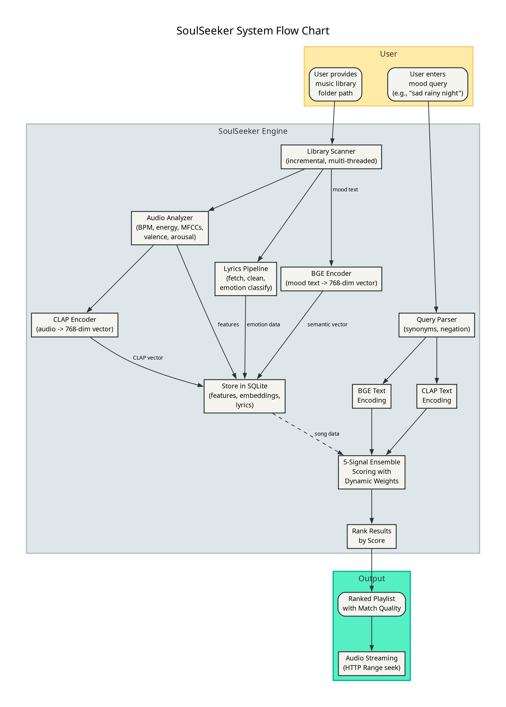
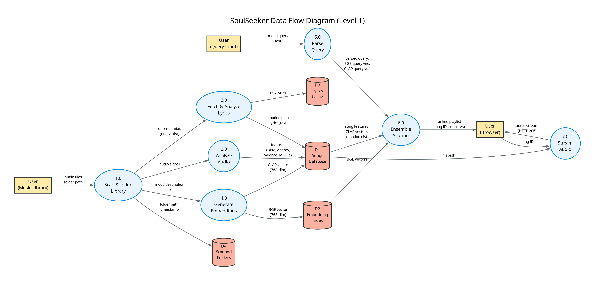

SoulSeeker
AI-powered mood-based music playlist generator using a 5-signal ensemble approach. Combines semantic embeddings (BGE), audio-text alignment (CLAP), Gaussian feature matching, genre detection, and lyrics emotion analysis - 100% offline.

Figure 1: Application Interface
Problem Statement
The Challenge
Music listeners with large local libraries face a significant challenge: manually browsing thousands of songs by genre or artist is time-consuming and ineffective. Current music streaming services rely on cloud-based processing and user data collection, raising privacy concerns while offering limited control over recommendation algorithms.
Existing solutions either:
- Require cloud connectivity, compromising privacy
- Use rigid genre-based categorization without mood understanding
- Rely on collaborative filtering instead of audio content analysis
There is a need for a privacy-first, local-only solution that can understand natural language mood descriptions and analyze audio content to generate personalized playlists.
Literature Review
Our approach is grounded in established music cognition and MIR research:
- Thayer's 2D Mood Model - Arousal-Valence plane for mapping emotional states
- Krumhansl-Kessler Profiles - Music cognition research for key detection from audio
- MFCC & Spectral Analysis - Standard MIR features for timbre and texture
- Sentence-Transformers - Semantic embeddings for natural language mood queries
- CLAP Audio-Text Alignment - Direct audio-to-text similarity using contrastive learning
Research Gap & Innovation
Our innovation: A local-first, 5-signal ensemble that combines BGE semantic embeddings, CLAP audio-text alignment, Gaussian feature profile matching, genre keyword detection, and transformer-based lyrics emotion analysis. Uses the 2D Valence-Arousal quadrant system - entirely offline with 0% cloud dependency.
Target Users
Privacy-conscious music enthusiasts, Users with large local libraries, Music enthusiasts wanting a free mood-based playlist generator, Users facing selection anxiety, Students wanting focus music, and party hosts needing vibe-appropriate selections.
Our Solution
How It Works
From audio file to search result in two phases - indexing and retrieval
Indexing Phase
Search Phase
Example: Query "sad rainy night" vs Song "low valence (-0.62), low arousal (0.28), minor key" - Similarity: 0.89
The 5-Signal Ensemble
Our system combines five complementary scoring mechanisms for comprehensive mood understanding
1. Semantic
22%
BGE embeddings
(768-dim)
2. CLAP
30%
Audio-text alignment
(768-dim)
3. Features
25%
Gaussian profile
(17 features)
4. Genre
10%
Keyword matching
(20 categories)
5. Emotion
13%
Lyrics analysis
(7 emotions)
Dynamic Weight Adjustment
Emotion-Dominant Queries
Queries like "angry", "heartbreak", "romantic"
Acoustic-Dominant Queries
Queries like "epic", "cinematic", "calm"
Thayer's Emotion Model
Our system maps moods to a 2D plane based on Russell's circumplex model: Arousal (energy level) vs Valence (happiness)
Figure 2: Mood positions on the Arousal-Valence plane
Arousal Axis (Y)
Represents energy/excitement level from 0 (calm/sleepy) to 1 (energetic/intense). Determined by BPM, RMS energy, and spectral bandwidth.
Valence Axis (X)
Represents emotional positivity from -1 (sad/negative) to +1 (happy/positive). Derived from musical mode (Major=happy), tempo, brightness, and spectral contrast.
How It Works
Each mood query maps to a target (arousal, valence) point. Songs are scored using Gaussian similarity - closer matches get higher scores.
Example Queries
System Architecture

Figure 1: Complete System Flow - From Audio Input to Playlist Output

Figure 2: Data Flow Diagram - Indexing & Retrieval Pipelines
Dataset & Input
Local music library (.mp3, .flac, .wav, .m4a)
Model & Architecture
5-Signal Ensemble Engine
Project Repository
VIEW CODETechnology Stack
Python
Core Language
FastAPI
Backend Framework
SQLite
Database
BGE Embeddings
Semantic (768-dim)
CLAP
laion/clap-htsat-unfused
Librosa
Audio Analysis
Transformers
Hugging Face
React
Frontend UI
Mutagen
Metadata Extraction
Emotion RoBERTa
Lyrics (7-class)
Lyrics APIs
LRCLib/Genius/OVH
TypeScript
Frontend
Results & Analysis
Correct songs in top 5 results
At least 1 relevant song in top 5
~1.6 songs/second (227 songs in 145s)
Our 5-signal ensemble approach combines: Semantic (22%), CLAP (30%), Audio Features (25%), Genre (10%), Emotion (13%) for comprehensive mood understanding. Dynamic weight adjustment adapts to query type for optimal results.
Key Achievements
Signal Sources
Semantic (22%), CLAP (30%), Features (25%), Genre (10%), Emotion (13%)
Valence-Arousal
Quadrant-based mood mapping
Cloud Dependency
100% offline, privacy-first
Key Detection
Krumhansl-Kessler profiles
Mood Model
Arousal-Valence 2D model
Synonym Mappings
Comprehensive query expansion
Mood Profiles
Gaussian feature profiles
Embedding Dim
BGE + CLAP vectors
17+ Audio Features
MFCCs, spectral contrast, ZCR, harmonic ratio, and more
~15ms Query Time
Pre-computed embeddings for instant playlist generation
Negation Support
"Happy but not energetic" - understands complex queries
Future Scope
CLAP Integration
CLAP audio-text alignment implemented with 768-dim embeddings
Lyrics Emotion
Transformer-based emotion classification (7-class) integrated
Adaptive Profiles
Learn feature profiles from user's library distribution
Real-Time Analysis
Live microphone input for instant mood detection
Mobile App
Optimized models for iOS/Android with ONNX export
User Feedback
Implicit feedback (skip rates) to personalize over time
Playlist Coherence
Transition smoothing based on BPM, key, energy
Hybrid Filtering
Combine with collaborative filtering for better results
Academic Credits
Project Guide
Dr. Virendra Kumar Meghwal
Department of CSE
Student
Ankit Bangadkar
ID: 2427030148